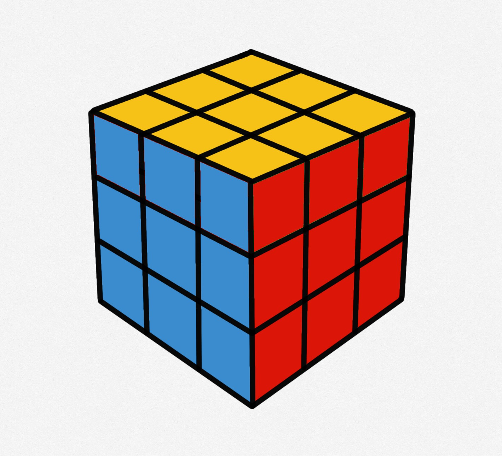

First you have to make a yellow cross on the top. You can have several starting points. But either way should use the same algorithm for all of them.
Now we have to position the yellow corners in the right place, they wont be flipped the right way round like in the bottom layer just yet. It takes an extra step. Find a piece which is already on the right place, move it to the right-front-top corner then apply the following algorithm to switch the three wrong pieces.
Use this algorithm: U R U' L' U R' U' L
Do this twice to do an inverse rotation of the pieces. If none of the yellow corners is on the right place then execute the algorithm once to get a good piece.
Now that the corners are in the right place, we need to rotate them so they match their face. Move an unsolved corner to the right top front corner. Then execute this move:
R' D' R D
You might have to do it two or four times depending on the position of the colours. When it is in the right place. Move another unsolved piece into the right top corner. And execute this move again till its solved. Do this with all four corners. It will appear as if the cube is fully scrambled but if you continue to do this for all four corners, the cube will eventually be solved.
